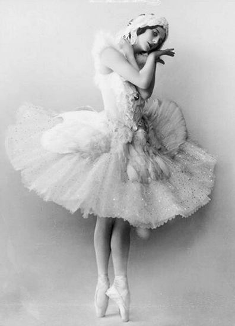
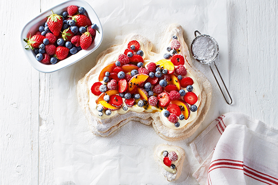

Origins:
Keith Money, a biographer of Anna Pavlova, wrote that a hotel chef in Wellington, New Zealand, created the dish when Pavlova visited there in 1926 on her world tour.
Professor Helen Leach, a culinary anthropologist at the University of Otago in New Zealand, has compiled a library of cookbooks containing 667 pavlova recipes from more than 300 sources. Her book, The Pavlova Story: A Slice of New Zealand’s Culinary History, states that the first Australian pavlova recipe was created in 1935 while an earlier version was penned in 1929 in the rural magazine.
The Australian website "Australian Flavour" gives the earlier date of 1926 for its creation, suggesting that Home Cookery for New Zealand, by Australian writer Emily Futter, contained a recipe for "Meringue with Fruit Filling". This recipe was similar to today's version of the dessert.
It has been claimed that Bert Sachse created the dish at the Esplanade Hotel in Perth, Australia in 1935. In defence of his claim as inventor of the dish, a relative of Sachse's wrote to Leach suggesting that Sachse may have accidentally dated the recipe incorrectly. Leach replied they would not find evidence for that "because it's just not showing up in the cookbooks until really the 1940s in Australia." (However, a 1937 issue of the Australian Women's Weekly contains a "pavlova sweet cake" recipe.) Of such arguments, Matthew Evans, a restaurant critic for The Sydney Morning Herald, said that it was unlikely that a definitive answer about the pavlova's origins would ever be found. "People have been doing meringue with cream for a long time, I don't think Australia or New Zealand were the first to think of doing that."
References:
Text sources
- Recipe - source: http://en.wikibooks.org/wiki/Cookbook:Pavlova Used under a Creative Commons, Attribution - ShareAlike License.
- Origins - source: http://en.wikipedia.org/wiki/Pavlova_%28food%29 Used under a Creative Commons, Attribution - ShareAlike License.
Image sources
- pavlova-sliced.jpg source: http://www.flickr.com/photos/essjay/2096492727/ by Flickr user EssjayNZ, used under a Creative Commons, Attribution, Nonnommercial, Share Alike License.
- pavlova-detail.jpg source: http://www.flickr.com/photos/anne-cathrine_nyberg/5401455835/ by Flickr user AnneCN, used under a Creative Commons, Attribution License.
- pavlova-whole.jpg source: https://highgatehillkitchen.com/2014/10/13/raspberry-pistachio-rosewater-pavlova/ by Sarah Gory, used under a Creative Commons, Attribution, Nonnommercial License.
- recipe_image_1.jpg, recipe_image_2.jpg and recipe_image_3.jpg source: http://artdefete.com/pavlova-meringue/ by Svitlana at artdefete.com, used under a Creative Commons, Attribution, Nonnommercial, Share Alike License.
- AP_Cygne.jpg source: https://en.wikipedia.org/wiki/Anna_Pavlova by Unknown, used under a Creative Commons, Public Domain License.
- pavlova_aus.jpg source: http://bmag.com.au/eating-and-drinking-in-brisbane/recipes/perfect-aussie-pavlova/ by Natalie Lane, used under a Creative Commons, Attribution, Nonnommercial, Share Alike License.